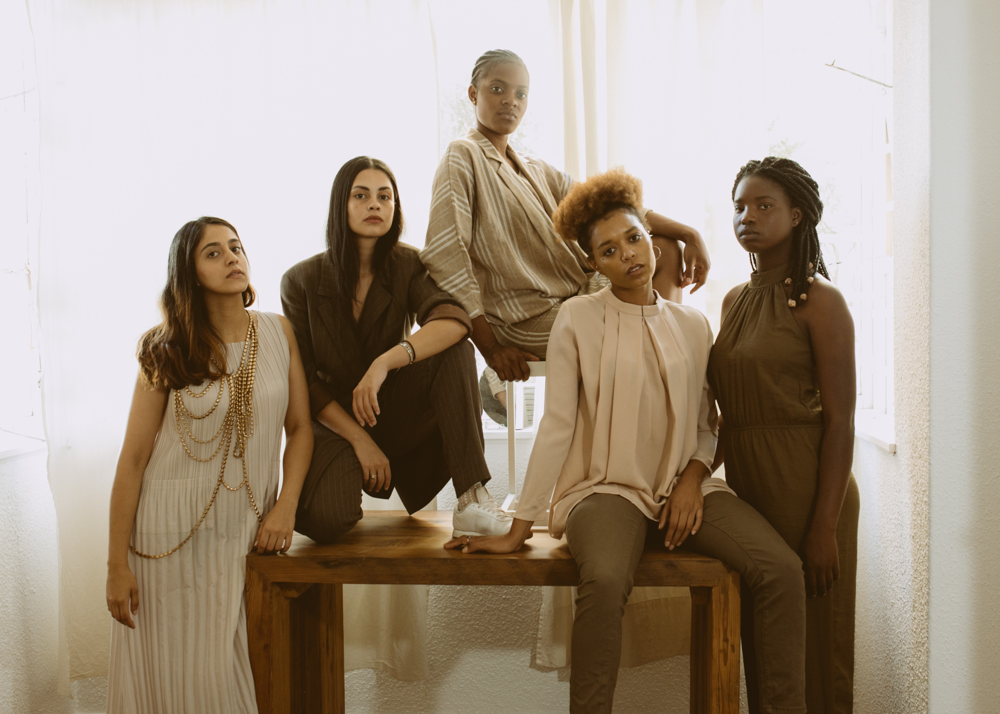

EQUIPMENTS
RECOMMENDED
- CAMERA
- CAMERA LENS
- TRIPOD
- MEMORY CARD
- EXTRA BATTERY
OPTIONAL
- LENS FILTER
- CAMERA FLASH
- LENS WIPES
- REFLECTOR
- CAMERA BAG
PHOTOGRAPHY STYLES
LANDSCAPE PHOTOGRAPHY
PORTRAIT PHOTOGRAPHY
STREET PHOTOGRAPHY
TRAVEL PHOTOGRAPHY

WILDLIFE PHOTOGRAPHY

FASHION PHOTOGRAPHY
FOOD PHOTOGRAPHY
ASTROPHOTOGRAPHY
WEDDING PHOTOGRAPHY

LONG-EXPOSURE PHOTOGRAPHY
TIPS AND TECHNIQUES
- Invest in quality equipments
- Have the right focal point
- Use the rule of thirds
- Change your angles
- Pay attention to framing
- Use ideal lighting
- Use filters and settings
- Take lots of shots
- Use simple backgrounds, especially when taking portraits
- Take your time when editing
POST-PHOTOGRAPHY ENHANCEMENT
- Learn and Master your Editing Software.
- Adjust Exposure. Correct underexposed or overexposed areas.
- Adjust Contrast. Enhance the difference between the light and dark areas to make your photo more dynamic.
- White Balance Adjustment. Correct the color temperature to make sure whites appear truly white.
- Experiment with Filters and Presets
- Apply Sharpening for a Clearer Image, but don't overdo it to avoid unnatural looks
- Apply Noise Reduction Especially in Low-light Photos, but maintain a balance to avoid loss of detail.
- Adjust Vibrance to Enhance the Intensity of Colors Without Oversaturating.
- Adjust Saturation for Artistic Effects
- Crop your Photo to Improve the Composition and Remove Unnecessary Elements
- Keep it Natural. While enhancements are essential, avoid over-editing. Strive for a natural look; sometimes, less is more.